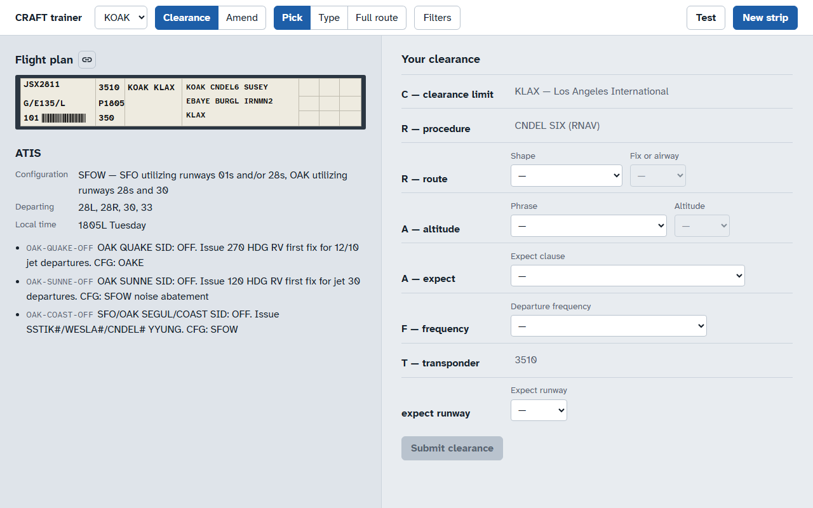
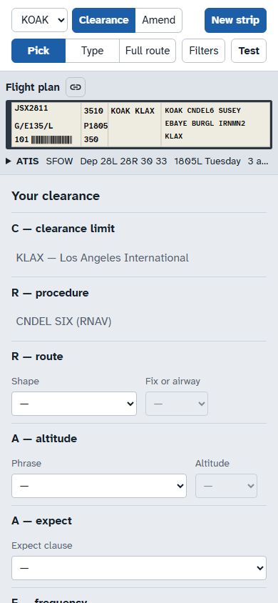

Both are interactive: the student answers a fixed demo strip (KOAK, JSX2811 to KLAX on the CNDEL SIX) and each step waits for them to do the thing it describes. Both open on first visit, can be skipped, and are replayed from the home page's "Take the tour" link at #/tutorial.
The page dims except the control being taught, and a card says what it is and what to do. The student works the real form; the tour moves on when they pick the right thing, or explains why a wrong pick is wrong. What they learn is exactly the screen they will use.
desktop · step 1 of 9 · the strip

Callsign and type on the left, then squawk, proposed time and filed altitude, the airports, and the filed route. Everything you clear comes from here and the ATIS below it.
phone · step 4 of 9 · the route

The filed route joins the CNDEL SIX at its SUSEY transition. Pick the shape that says so.
A separate page at #/tutorial/<step> with a lesson list down the side, a short explanation, the part of the strip it concerns highlighted, and one "try it" question with feedback. Room for more teaching per step (the why, the 7110.65 paragraph), but the student meets the real trainer screen only after the last lesson.
desktop · #/tutorial/4
The procedure is the SID the SOP assigns. The route says where the flight leaves it: here the filed route joins the CNDEL SIX at SUSEY, so the clearance reads "Candle Six departure, Susey transition, then as filed".